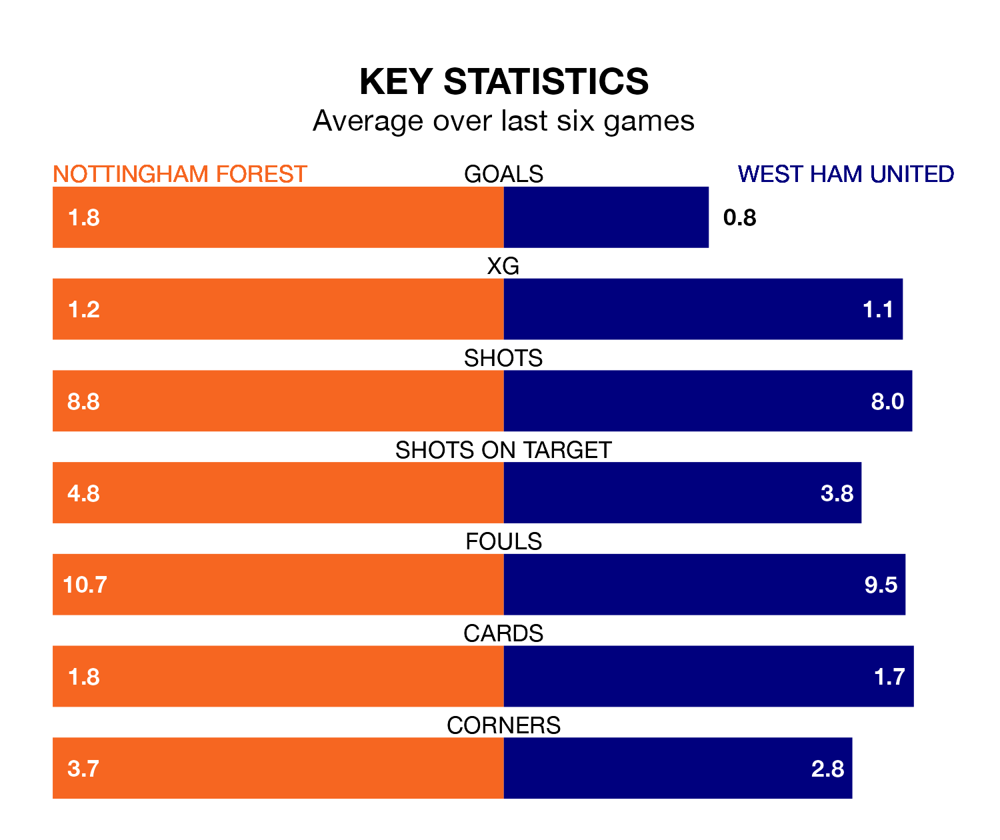

West Ham United travel to the City Ground looking to secure a first win in six Premier League games against Nottingham Forest on Saturday.
The Hammers have lost two and drawn three matches since they last earned three points – against Arsenal on December 28.
They face a Forest side who have won just one and drawn one over that time.
Forest are 17th in the table after 24 games, of which they have won five and drawn six, earning 21 points.
West Ham are nine places ahead of the Tricky Trees in eighth, with 10 wins and six draws putting them on 36 points.
With 30 goals in 24 games so far this season, the home team are scoring at below the league average rate with 1.2 goals per game. And they are conceding more than average, letting in 44 goals at a rate of 1.8 per game.
United are also below average scorers, with 1.5 goals per game, compared to a league average of 1.6. They have conceded 1.8 goals per game.
In Jarrod Bowen, the Hammers have one of the league's most on-form strikers so far this season. He has notched 11 goals in 23 appearances, to sit fifth in the scoring charts.
His goal rate of one every 188 minutes is slightly quicker than that of Chris Wood, Forest's top scorer with a goal every 108 minutes, and a total of eight goals in 20 games.
In the last three years, Forest and West Ham have played each other on three occasions. Forest won one of them and West Ham the other.
Their last meeting was on November 12, when West Ham won 3-2 at home.
Forest's last match was on Saturday, a 3-2 loss against Newcastle United, with Anthony Elanga and Callum Hudson-Odoi getting the goals for the Tricky Trees.
West Ham lost 6-0 against Arsenal last time out, on Sunday.
Saturday's match will be refereed by Thomas Bramall, who has taken charge of seven Premier League games so far this season, issuing one red card and booking 33 players. He has awarded three penalties.
The last West Ham game Bramall refereed was the 3-2 loss away at Brentford on November 4. He is yet to oversee a match featuring Forest this season.
Updated: 12:06 (UTC), 15/02/24